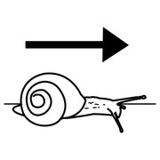
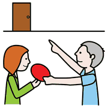
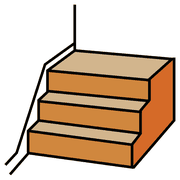
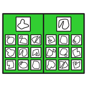

Modulo 4, organizzare
Comunicare con l'aiuto visivo
Comunicare non vuol dire solo parlare. Il primo passo è osservare come l'alunno comunica già, per trovare insieme un codice che funzioni per tutti e due.
chi, che cosa,
perché, come,
dove
Quanti modi di comunicare
 parlare
parlare indicare
indicare pittogrammi
pittogrammi guardare
guardareComunichiamo con le parole, ma anche con l'espressione del viso, la postura, i gesti, perfino con i vestiti e con il contesto in cui ci troviamo. E di solito mettiamo insieme tutti questi segnali senza accorgercene. È proprio questa integrazione a essere difficile per molti alunni nello spettro.
Anche il linguaggio verbale si presenta in modi molto diversi:
Due fenomeni da conoscere. L'ecolalia: ripetere subito, o a distanza di tempo, parole o frasi sentite. Spesso ha una funzione e va osservata, non zittita. L'interpretazione letterale: «hai la testa fra le nuvole» può far guardare verso il soffitto.
Come parlare
parlare
lento ascoltare
ascoltare- Poche paroleFrasi brevi, una richiesta alla volta.
- Parole concreteNiente modi di dire, ironia o doppi sensi, almeno all'inizio.
- Voce calmaUn tono tranquillo e costante, anche quando la situazione si scalda.
- Al suo livelloUn linguaggio adatto al suo funzionamento, non solo alla sua età.
- Gesti e immaginiIndicare, mostrare, accompagnare la parola con un'immagine.
- Tempo per rispondereAspettare qualche secondo in più prima di ripetere.
ogni messaggio
ha uno scopo
Perché si comunica

chiedere io voglio
io voglio no
noPrima di chiederci come comunica un alunno, chiediamoci perché. Gli scopi della comunicazione sono più o meno sempre questi otto:
| Funzione | Per esempio |
|---|---|
| Chiedere qualcosa | Porta l'adulto davanti all'armadio dei giochi. |
| Attirare l'attenzione | Tocca il braccio della maestra che sta parlando con un altro bambino. |
| Commentare | Dice «finito» guardando il disegno appena completato. |
| Rifiutare | Allontana la scheda o si alza dal banco. |
| Chiedere informazioni | «Dove zaino?» |
| Dare informazioni | Alla domanda «dov'è la colla?» indica il cassetto. |
| Esprimere emozioni o sensazioni | Si tappa le orecchie e si accuccia quando suona la campanella. |
| Routine sociali | «Ciao», «grazie», dare il cinque. |
Osservare la comunicazione
 osservare
osservare scrivere
scrivere bambino
bambinoUna semplice tabella aiuta a passare da «fa i capricci» a «sta chiedendo qualcosa, in questo modo». Nella prima parte si descrive, nella seconda si analizza:
| Che cosa succede | Che cosa fa o dice | Dove, con chi | Forma | Funzione |
|---|---|---|---|---|
| Durante la merenda il pacchetto di cracker è chiuso sulla cattedra. | Batte le mani sul banco, piange e guarda più volte la maestra. | In classe, con la maestra di sostegno. | Gesti e pianto | Chiedere |
| Stessa situazione, qualche settimana dopo. | Stacca il simbolo «cracker» dalla tabella e lo porge alla maestra. | In classe, con la maestra di sostegno. | Simbolo | Chiedere |
| Merenda in giardino, con un'altra insegnante. | Porge di nuovo il simbolo. | In giardino, con la maestra di classe. | Simbolo | Chiedere |
La funzione è rimasta la stessa; è cambiata la forma. E l'ultima riga mostra la generalizzazione: lo stesso modo di chiedere funziona in un altro luogo e con un'altra persona.
la CAA non
blocca la
parola
La CAA
 comunicarepittogrammi
comunicarepittogrammi tablet
tabletLa Comunicazione Aumentativa Alternativa raccoglie conoscenze, strategie e strumenti per sostenere chi, per un periodo o per sempre, non può contare sul linguaggio verbale. Aumentativa perché potenzia i modi di comunicare che la persona ha già; alternativa perché usa anche codici diversi dalla parola. Non sostituisce il linguaggio: lo accompagna.
| Tecnologia | Esempi |
|---|---|
| Bassa | Agende e spazi strutturati, tabelle e quaderni di comunicazione, sistemi a scambio di immagini come il PECS, indicazione con lo sguardo su un pannello trasparente (E-Tran). |
| Media | Comunicatori con uno o più messaggi registrati, da premere. |
| Alta | App e software per tablet e computer, con sintesi vocale. |
I simboli più usati sono ARASAAC (gratuiti), PCS e Widgit. Per approfondire c'è la mia Guida pratica operativa alla CAA.
Un percorso di CAA

scale imparare
imparare insieme
insieme- Capire i bisogniChe cosa sa già fare? Vede bene? Ha particolari sensibilità visive? Quale livello di immagine comprende (oggetto, foto, simbolo)?
- Partire da ciò che gli piaceLa comunicazione nasce dalla motivazione: si inizia con oggetti e attività molto desiderati, e solo dopo si passa alle routine.
- Creare l'occasioneCiò che desidera è visibile ma non a portata di mano, così diventa necessario chiederlo. All'inizio si lavora in un luogo sempre uguale; poi si generalizza.
- Valorizzare ciò che c'èIndicare, consegnare una carta, qualche parola, rispondere a domande: si costruisce su queste abilità.
- Scegliere le prioritàPer ogni obiettivo due domande: è utile nella sua vita? È possibile per lui, adesso?
in coppia
è meglio
Prova in classe
 classe
classe
tabella giocare
giocare- Osserva per una settimanaCompila la tabella di osservazione in tre momenti diversi della giornata: merenda, intervallo, lavoro al banco.
- Trova le funzioniPer ogni episodio scrivi la funzione. Quale compare più spesso?
- Una tabella per i compagniProgetta una tabella di comunicazione per un momento con i pari, per esempio un gioco all'intervallo. Foto, disegni o simboli? Decidetelo insieme.